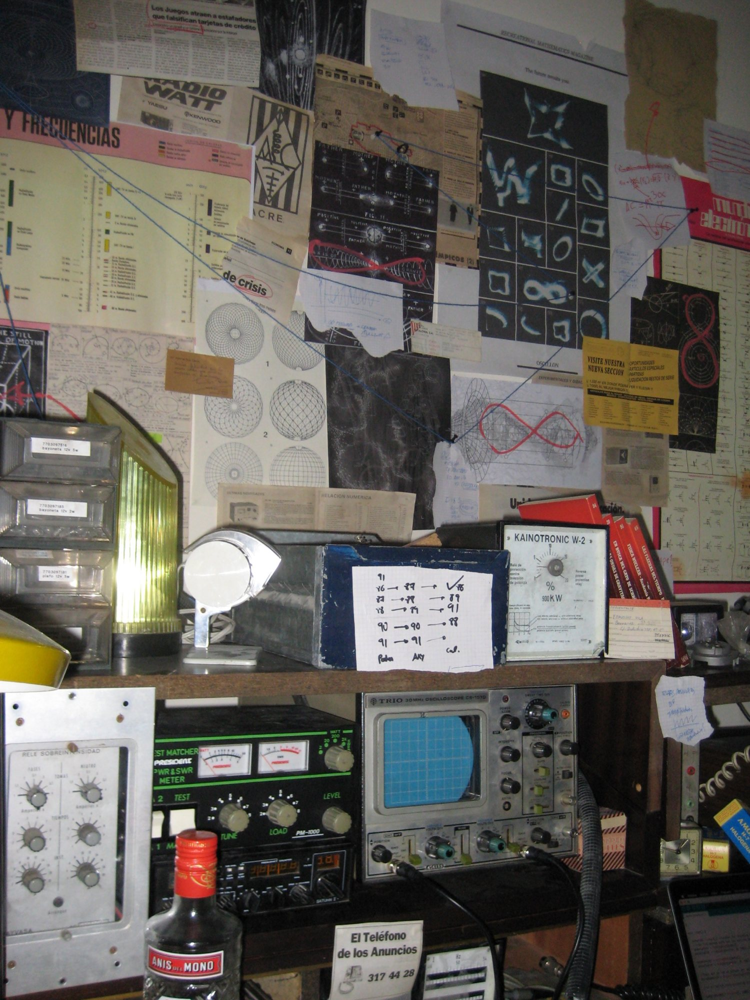
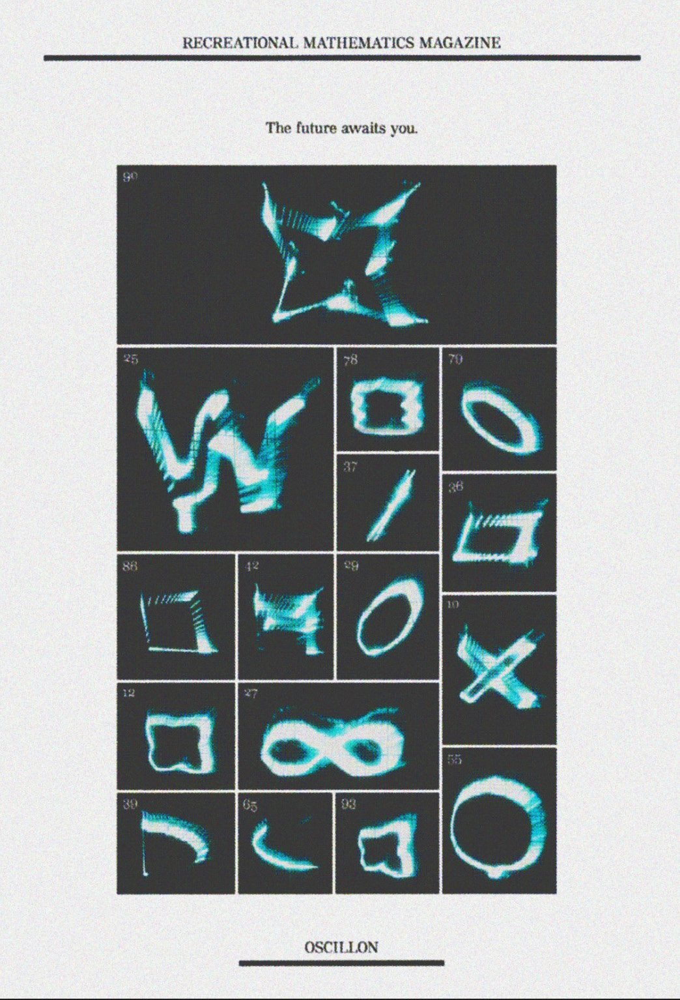

8. Oscilloscope Game
Diseño y producción de un juego para un escape room.Nos encargaron crear un juego tangible para un escape room centrado en un osciloscopio. El reto era modificarlo para que los jugadores pudieran interactuar con él, dentro de una narrativa coherente con la historia del escape room.
Como el escape room giraba en torno a los viajes en el tiempo, ideamos un juego en el que había que generar en la pantalla del osciloscopio una forma de infinito para iniciar el viaje. Para ello integramos tres elementos clave: el propio osciloscopio, una interfaz fabricada para interactuar con él y un póster con distintas formas y códigos. Además, incorporamos la iluminación de la sala como parte del juego.

El póster, situado frente al jugador, mostraba distintas formas que se podían conseguir ajustando los potenciómetros de la interfaz falsa que diseñamos. El objetivo era recrear la forma de infinito, símbolo del viaje en el tiempo y motivo recurrente en todo el escape room. Al conseguirlo, todas las luces de la sala parpadeaban, señal de que el portal temporal se había activado.

Para hacerlo realidad usamos Arduino, tanto para generar las señales que el osciloscopio interpreta como dibujos como para la interfaz con potenciómetros. Para controlar las luces de la sala usamos Max MSP.
Por último, construimos todo el decorado para sumergir a los jugadores en el despacho de un científico loco y poder grabar un vídeo demo.


Diseño y producción de un juego para la asignatura “Interfaces interactivas”
3.º del Grado en Diseño de Interacción de ELISAVA, 2023
Proyecto de Gerard Escolies, Samanta Román, Andie Puentes, Victoria Stupai y Marta Pou de Avilés.
3.º del Grado en Diseño de Interacción de ELISAVA, 2023
Proyecto de Gerard Escolies, Samanta Román, Andie Puentes, Victoria Stupai y Marta Pou de Avilés.